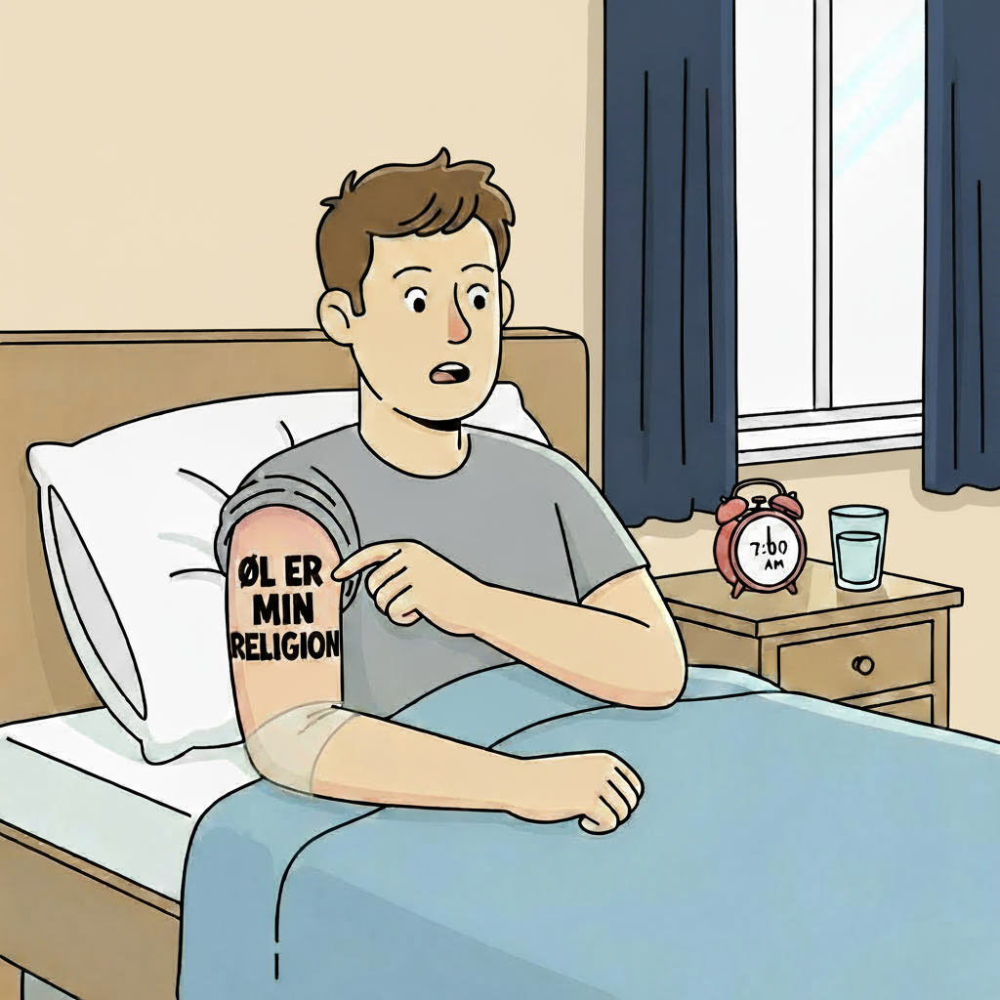
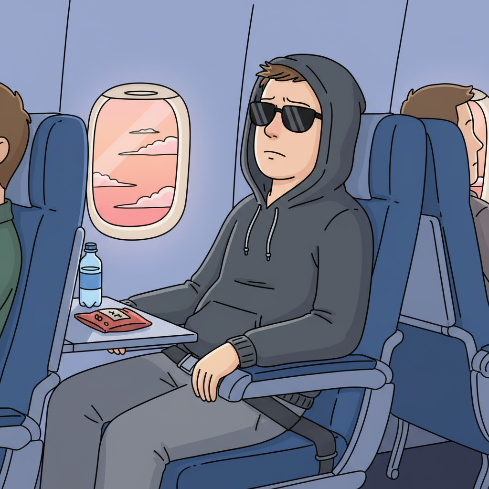

Tømmermænd...
Tømmermændende er uundgåelige, og bliver slemmere jo ældre vi bliver. Heldigvis har vi skabt en lille 3 trins guide, som forhåbentlig hjælper dig mod en friskere lørdag morgen.
Se mereAlle kender dem, ingen slipper for dem - tømmermændende hæler ind på os hver weekend, hvordan kan det stoppes?
Tømmermændende er uundgåelige, og bliver slemmere jo ældre vi bliver. Heldigvis har vi skabt en lille 3 trins guide, som forhåbentlig hjælper dig mod en friskere lørdag morgen.
Se mereDu kan bruge vores indberetter og fortælle os om din aften – og præcis hvor meget du fik at drikke (hvis du husker det). Så giver vi dig personlig hjælp og tips skræddersyet til dine tømmermænd.
Se mere“Står der virkelig ‘øl er min religion’ i Comic Sans?” spørger Jonas, mens han overvejer at konvertere til vand.
“Står der virkelig ‘øl er min religion’ i Comic Sans?” spørger Jonas, da han vågner med tømmermænd og en tatovering han ikke kan huske. Vennerne fortæller, at han ville “hellige sig øllets åndelige kraft”. Han overvejer nu at konvertere til vand og få fjernet både tatovering og dårlige beslutninger.
...indtil nogen nævner “fredagsbar.”

Efter en aften fuld af "jeg drikker kun lige et par stykker" vågner Mads op med en hovedpine, der kunne få en kirke til at ryste. Han sværger højtideligt aldrig at drikke igen... indtil hans ven nævner ordet "fredagsbar", hvorefter han spontant genvinder sin tro på øl.
Sletter appen, flytter til Sverige og starter et nyt liv som Lars.
Efter en hurtig scroll gennem nattens DM's indser Rasmus, at fremtiden ikke længere findes i Danmark. Han pakker derfor tasken, ændrer navn til Lars og begynder sit nye liv i Sverige, hvor ingen kender til hans beskeder, hans skam eller hans brug af emojis.